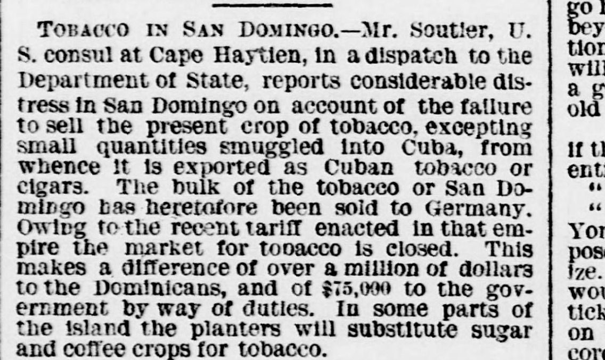
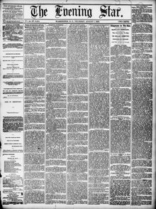

S. consul at Cape Haytlen, in a dispatch to the DepartmentEl cónsul de los EE. UU. en Cabo Haitiano, en un despacho al Departamento
Evening Star. Washington, D.C., August 7, 1879. Page 1. View the originalVer el original


See the full pageVer la página completaAccording to a dispatch from U.S. Consul Mr. Soutier at Cape Haytien, San Domingo is experiencing considerable distress because its tobacco crop cannot be sold, largely due to a new German tariff that closed that market. This loss costs Dominicans over a million dollars and the government $75,000 in duties, leading some planters to consider substituting sugar and coffee crops. Additionally, a private letter from Minister Resident and Consul General John M. Langston in Hayti reported that he has recovered from yellow fever and intends to leave for Washington soon, delayed only by an extensive revolution in the Haytien government.A tenor de un despacho del cónsul estadounidense Soutier en Cap-Haïtien, Santo Domingo atraviesa agudas estrecheces ante la imposibilidad de expender su cosecha tabacalera, atribuida principalmente a los nuevos aranceles alemanes que cerraron dicho mercado. La contingencia ocasiona pérdidas superiores al millón de pesos a los cosecheros y de 75.000 dólares al fisco en aduanas, incitando a varios hacendados a sustituir las vegas por cañaverales y cafetales. Por lo demás, una misiva particular del ministro residente y cónsul general John M. Langston en Haití daba cuenta de su restablecimiento de la fiebre amarilla y su próximo viaje a Washington, aplazado tan solo por una vasta insurrección contra el gobierno haitiano.
FULL TEXT:TEXTO COMPLETO:
TOBACCO IN SAN DOMINGO.--Mr. Soutler, U. S. consul at Cape Haytien, in a dispatch to the Department of State, reports considerable distress in San Domingo on account of the failure to sell the present crop of tobacco, excepting small quantities smuggled into Cuba, from whence it is exported as Cuban tobacco or cigars. The bulk of the tobacco of San Domingo has heretofore been sold to Germany. Owing to the recent tariff enacted in that empire the market for tobacco is closed. This makes a difference of over a million of dollars to the Dominicans, and of $75,000 to the government by way of duties. In some parts of the island the planters will substitute sugar and coffee crops for tobacco.TABACO EN SANTO DOMINGO.—El Sr. Soutler, cónsul de los Estados Unidos en Cabo Haitiano, en un despacho al Departamento de Estado, reporta considerable angustia en Santo Domingo a causa de la falta de venta de la presente cosecha de tabaco, excepto pequeñas cantidades contrabandeadas a Cuba, desde donde es exportado como tabaco o cigarros cubanos. La mayor parte del tabaco de Santo Domingo ha sido vendido hasta ahora a Alemania. Debido al reciente arancel promulgado en ese imperio el mercado para el tabaco está cerrado. Esto hace una diferencia de más de un millón de dólares para los dominicanos, y de $75,000 para el gobierno en concepto de derechos. En algunas partes de la isla los hacendados sustituirán cultivos de azúcar y café por el tabaco.